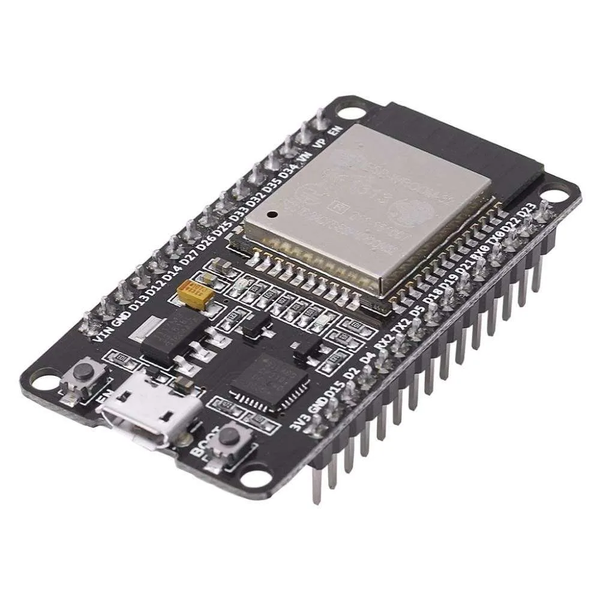
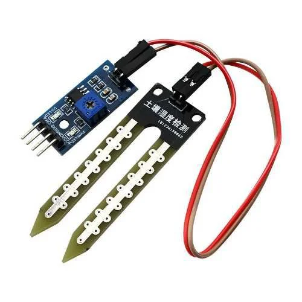
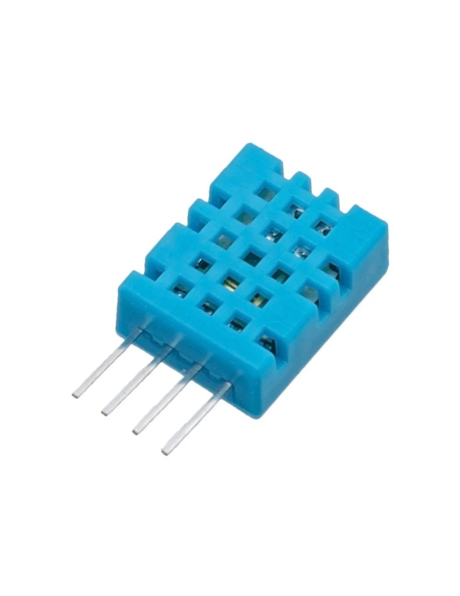

A ESP32 é o “cérebro” do sistema, conectando todos os sensores e processando as informações para enviar dados sobre umidade e temperatura para uma interface de monitoramento. Sua capacidade de conectividade permite a integração com dispositivos móveis para visualização em tempo real.

Sensor de Umidade do Solo
Este sensor mede a umidade do solo, essencial para avaliar se a planta está recebendo água suficiente para se manter saudável. O sensor funciona medindo a resistência do solo, que varia com a quantidade de água presente.

Sensor de Umidade e Temperatura do Ar
O sensor de umidade e temperatura do ar capta dados sobre as condições atmosféricas ao redor da planta. Ele mede a umidade relativa e a temperatura do ar, parâmetros críticos para a manutenção de um ambiente saudável para a planta.

Visão Computacional para Classificação da Babosa
Com a ajuda da visão computacional, o sistema analisa imagens da babosa e detecta automaticamente sinais de saúde ou possíveis doenças. Esse modelo de classificação foi treinado para identificar características visuais que indicam se a planta está saudável ou em situação de risco, auxiliando na tomada de decisões para cuidados preventivos.
Funcionamento Geral
Todos os dados coletados são transmitidos para um servidor e depois para a interface de monitoramento, que exibe gráficos e informações em tempo real sobre as condições da planta. Com uma combinação de IoT e inteligência artificial, o sistema oferece uma maneira prática e eficiente de acompanhar a saúde da babosa, auxiliando tanto no cultivo sustentável quanto no estudo das necessidades da planta.